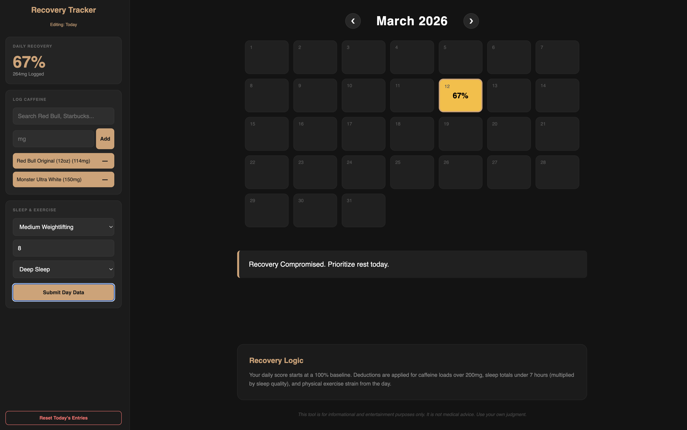
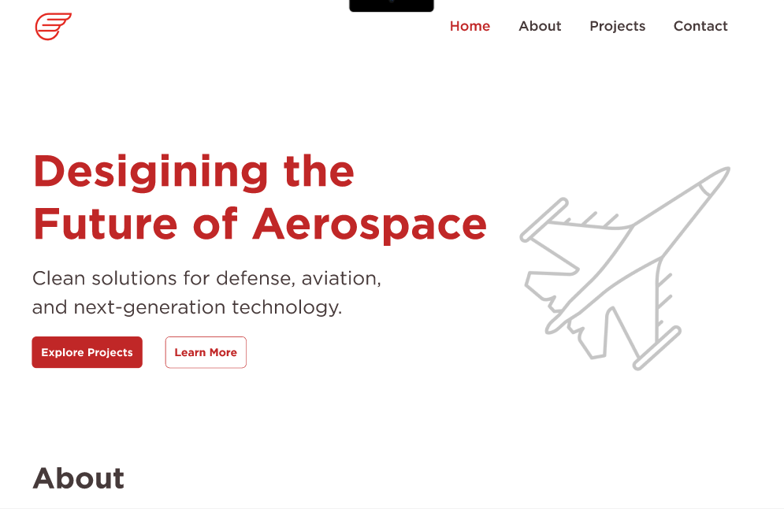
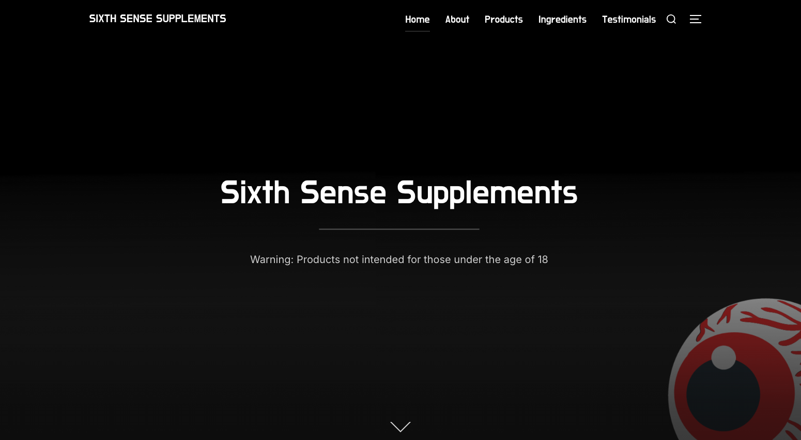
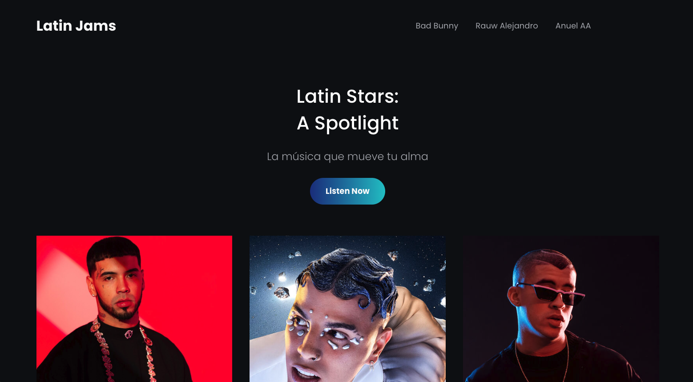
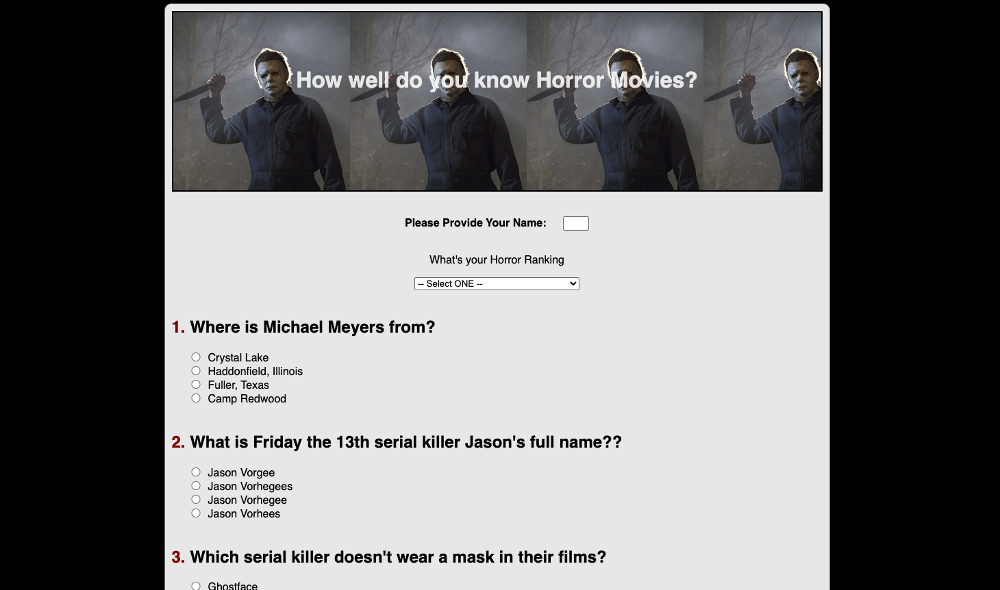

Industry Experience
I bring a background in government contracting, nonprofit organizations, and mission-driven initiatives, supporting communications that connect industry, workforce development, and national security priorities.
Hi there,
I build bold digital experiences that blend clean design, creative storytelling, and modern web execution.
I graduated from Texas State University with a degree in Digital Media Innovation, a STEM-designated program within the School of Journalism and Mass Communication. I currently serve as a Communications Specialist at BlueForge Alliance, a nonprofit strengthening the U.S. defense industrial base through advanced technology, supply chain optimization, and workforce development.
I bring a background in government contracting, nonprofit organizations, and mission-driven initiatives, supporting communications that connect industry, workforce development, and national security priorities.
My work centers on internal and external communications strategy across web, email, and social media. I also develop internal communication systems using SharePoint and PowerApps, with a strong understanding of front-end technologies including HTML, CSS, and JavaScript.
I’m motivated by mission-focused work that creates real impact—from strengthening national capabilities to supporting local communities. I’m also deeply interested in the evolving intersection of technology, digital platforms, and artificial intelligence.
A snapshot of the roles and responsibilities that define my professional foundation.
BlueForge Alliance
Industry: Government Contracting
I support internal and external communications strategy while serving as a technically inclined operator on the team—publishing website and email-platform content, creating digital and video assets, building internal forms and SharePoint intranet experiences, and helping align content with broader strategy and development goals.
250+
Employees supported through the internal SharePoint intranet experience I created
350+
Travel approvals processed through the Power Automate + SharePoint workflow I built
15+
National engagement events where I represented the mission and spoke to priority audiences
BlueForge Alliance
Industry: Government Contracting
Camp Wapiyapi
Industry: Nonprofit
Realized Holdings
Industry: Financial Technology
“Will is incredibly responsive and dependable—just a great person to work with.”
— Alyssa Brigham, Education & Training Manager, Blue Forge Alliance
“OMG, brother—you are amazing! The SharePoint site looks amazing.”
— Robert Barr, Director of Procurement, Blue Forge Alliance
“Echoing Israel’s comments—the site looks amazing. We’re excited to begin loading content. Many thanks from the entire Fortuna team.”
— Fortuna Project Team
Selected work samples with direct links to live pages, social profiles, and prototype showcases.

I developed the Caffeine Recovery Tracker, a web app that helps visualize how caffeine consumption impacts daily recovery and performance. Users log drinks, sleep, and exercise, and JavaScript logic analyzes the data to generate a recovery estimate and personalized feedback. Entries are tracked through a calendar interface to highlight patterns over time. The project was created using HTML, CSS, and JavaScript with AI-assisted coding tools to support rapid development and problem solving.
View Project
I supported the launch and ongoing optimization of BuildSubmarines.com, a workforce development platform connecting talent to careers in the U.S. submarine industrial base. My role focused on analytics, content management, and performance tracking across multiple channels. I collected and analyzed weekly data from Google Analytics and ZipRecruiter to evaluate user behavior, job engagement, and campaign effectiveness, translating insights into reports for stakeholders supporting U.S. Navy initiatives. I also contributed to site updates, implemented UTM tracking strategies, and helped ensure content was accurate and engaging across the platform.
View Project
I developed the Caffeine Recovery Tracker, a web app that helps visualize how caffeine consumption impacts daily recovery and performance. Users log drinks, sleep, and exercise, and JavaScript logic analyzes the data to generate a recovery estimate and personalized feedback. Entries are tracked through a calendar interface to highlight patterns over time. The project was created using HTML, CSS, and JavaScript with AI-assisted coding tools to support rapid development and problem solving.
View Project

This is a four-frame Figma prototype exploring clean design, basic branding, and interactive prototyping. The project highlights my ability to build a cohesive visual identity and translate it into a functional, clickable site experience.
View Project

Sixth Sense Supplements was a college project built as a WordPress site, blending design and entrepreneurial skills. Using Bootstrap, I created five unique pages focusing on branding, product display, and user navigation. As a mock fitness supplement company, the project allowed me to address business strategy, customer needs, and digital presence.
View Project

A fast-turnaround WordPress site project focused on modern theme selection, clean design, and efficient build. All site copy was generated with AI, allowing me to concentrate on branding and layout while delivering a polished, functional site quickly. This project reflects speed, structure, and design consistency under tight timelines.
View Project

A college project focused on JavaScript fundamentals, this 10-question horror quiz let users submit answers and receive a score. Prioritizing functionality over design, it showcases my ability to create interactive features with JavaScript logic, input validation, and scoring.
View Project